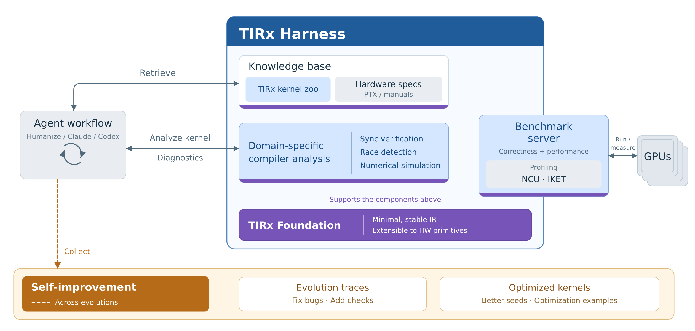
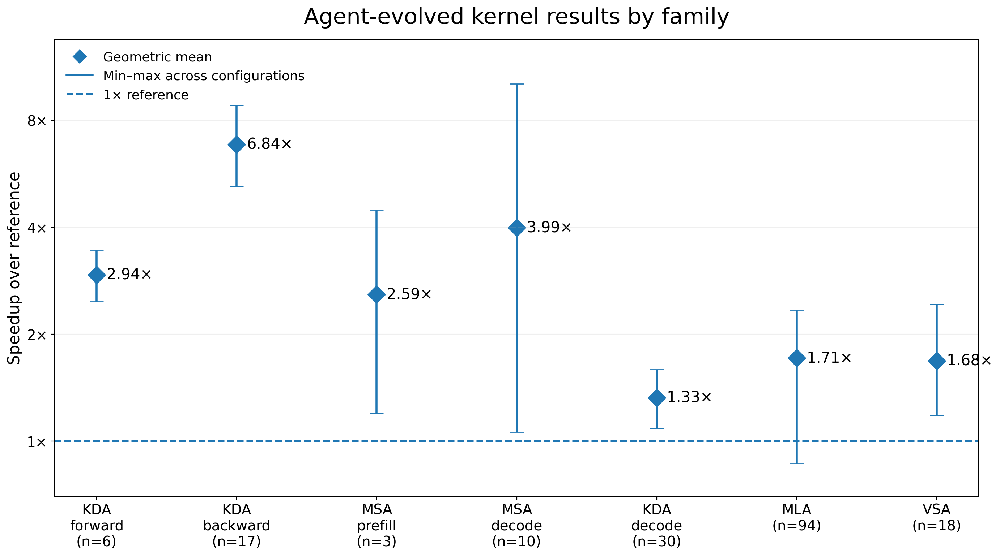

Agent已经能自动写GPU kernel了，但MLC社区在KDA这类任务上发现：Agent的大量时间花在优化本身之外的事情上：预测代码会被编译器lower成什么硬件行为、诊断时序相关的失败、找对这个任务相关的实现策略。Token效率掉得很快，有些本可行的优化在搜索预算内永远够不到。
他们的答案是TIRx Harness：一个开源编译器harness，最小稳定的编译器底座加知识库、工具和评测服务器。下面拆开四个组件和Agent用它做出的kernel。
这篇的视角是：智能体编程的重心正在从“写代码”转向“塑造Agent工作的环境”。编译器harness就是编译器底座周围的Agent-facing环境：领域专用的分析诊断、IR专属的知识语料、评测工具。
跟它呼应的还有NVIDIA的CAKE（把编译器和Agent协同设计摆到明面上）和OpenAI的Jalapeño（把编程目标本身设计得够清晰够可预测，让AI好优化）。TIRx Harness是这个思路在GPU kernel开发上的一个实例，核心问题是：怎么设计一个极简、稳定、可扩展的编译器底座。

编程底座决定Agent能不能把写下的代码和GPU实际执行对上。高层抽象对生产力好，但会让优化难推理：Agent知道想要什么执行策略，却不知道写什么源码能让编译器lower到那个策略。漫长的编译链还让“改了哪行导致变快”对不上号。
TIRx的解法是两条：贴硬件，薄的PTX级编程面让Agent直接表达指令和执行策略，不依赖高层抽象去猜lower结果；做极简，除了硬件接口之外几乎不引入独立语义，IR和编译路径小而稳定，PTX ISA就是指令语义的第一真相来源。扩展也轻：暴露一个新的PTX能力通常只需要少量适配。
底座简单了，失败还是难诊断。kernel可能跑很多次都过，某次因为间歇性的同步bug或数据竞争挂掉，Agent只拿到一个pass或fail信号，基本没法下手。所以harness的原则是：工具要给出关于程序行为的有用反馈，不只是测试结果。
TIRx做了同步验证和数据竞争分析，直接看并发行为；没有GPU可用时用数值模拟给反馈；性能诊断接了现有的NCU和IKET。这些工具告诉Agent该查什么，而不是只说行不行。
可预测的底座加更好的诊断，还缺实现和优化知识。早期实验里Agent花大量时间学编程模型、重新发现已有的优化套路。自然的想法是让Agent总结每轮的经验，但实践发现Agent写的总结经常过拟合刚调通的那个case，丢掉有用的实现细节。
所以知识库保留的是具体实现。核心是kernel zoo，60多个TIRx kernel，给Agent具体的起点和可复用的优化模式。zoo只覆盖已经出现过的想法，PTX文档补上另一半：暴露硬件能力，开辟新的优化方向。一个管复用已知，一个管发现未知。
正确性测试、计时、profile决定哪个候选被接受、下一个试什么优化，一次误导性的测量会影响很多次尝试而不是一次。Agent在自己环境里直接起GPU作业，两个目标让测量难可靠：要很多Agent并发跑，又要测量不受并发GPU活动污染。
答案是把评测和Agent分开：KCoral评测服务器独占GPU，Agent要测正确性、跑benchmark、采profile都发请求给KCoral，不自己起作业。KCoral集中调度，保证测量可比。
发现新方向：硬件文档能扩大搜索空间而不只是查语法。MSA稀疏prefill的一条轨迹里，Agent从PTX ISA里翻出tcgen05.mma的输出lane masking，做成优化。mask没减少MMA的工作量，反而把观测到的GPU频率抬上去了，涨2到3%。KDA backward里，Agent把转置、对角缩放和行向点积搬到Tensor Core路径上：点积算了个完整的64乘64矩阵只取对角，故意多花Tensor Core的算力，换掉shared memory的partial和reduction。
迁移策略：kernel zoo给的是能改编的策略而不是照抄。在MSA上，Agent搬了FlashAttention-4的混合native加软件指数策略，用普通FMA给native exp路径减负，延迟降约2.9%。KDA forward上搬了Gated DeltaNet的分层逆分解，把串行的32乘32递推换成小块求逆加MMA合并，延迟降约17%。这就是保留具体实现的原因：分解和数据流能跨kernel迁移。
诊断不安全候选：一条KDA轨迹里，候选过了benchmark的正确性测试，同步分析还是抓到一个潜伏bug：复用的mbarrier可能在晚到的消费者等完上一代之前就推进到下一代。Agent在时序bug实际触发前修好了同步协议。
评测覆盖KDA、MSA、MLA、VSA四个family，全在Blackwell上跑，用Humanize 2的flame chase流程，优化期间断网。基线是2026年9月25到26日精选扫描里记录的各family优化参考实现，比的是GPU kernel时间不是端到端延迟。
用TIRx Harness的Agent做出的kernel，几何平均加速比从1.33倍到6.84倍：KDA forward 2.94倍（对FlashKDA，n=6），backward 6.84倍（对Flash Linear Attention，n=17）；MSA prefill 2.59倍，decode 3.99倍；KDA decode 1.33倍；MLA 1.71倍（n=94）；VSA 1.68倍（n=18）。
作者自己也打了预防针：智能体编程的格局按天在变，Agent、工作流、编译器、参考实现都在涨，这个数字的目标不是立永久排名，而是证明harness能带来什么。各family的参考实现不一样，加速比只能在family内解读。

kernel进化也能反哺harness。一轮跑下来暴露工具bug、不支持的行为或缺失的检查，轨迹本身就是现成的复现器，可以直接拿去修分析工具。跑成功的kernel走另一条路：进kernel zoo，变成下一轮更好的起点和可复用的优化策略。
这就是TIRx理解的自我改进：不让Agent写“学到了什么”的总结，而是保留具体产物：一个验证过的工具修复，或一个测过的kernel实现，下一轮直接拿来用。
下一步三个方向：看harness多快能适配新GPU架构（Agent多快能用上新指令和硬件特性）；把TIRx再往硬件推一层，暴露更底层的机制；以及更多的kernel family。想试的可以从GitHub仓库开始，配的书《Agentic GPU Programming for MLSys》讲了智能体GPU编程和编译器harness的主要内容。
参考：https://blog.mlc.ai/2026/09/29/tirx-harness-an-open-compiler-harness-for-agentic-gpu-programming